新生见面会&第二次培训
新生见面会&第二次培训
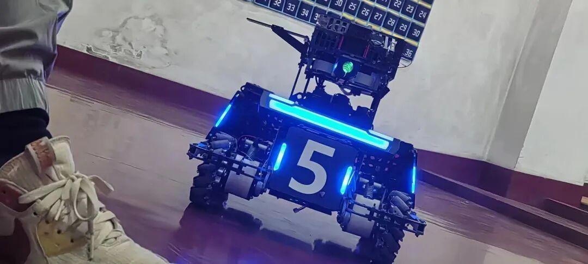

此次新生见面会热闹非凡，大二学长学姐的体贴，开放而又不失沉稳，大一新生的，积极，活泼而又不失可爱。会议进行地愉快且流畅，体现了电协“团结与友爱”。
NEWS TODAY
1.送糖糖
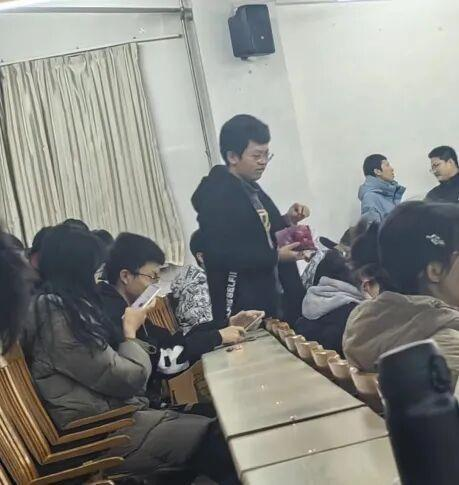
电协的大哥大姐们为萌新们准备了糖果，但因为大哥的太过大度，导致糖果有那么亿点点不够分。
2.电协及各部门介绍
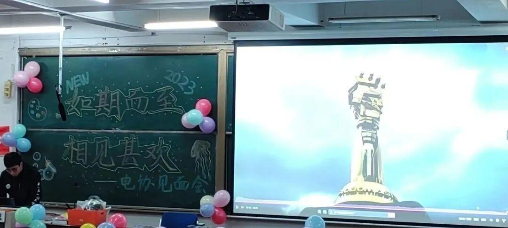
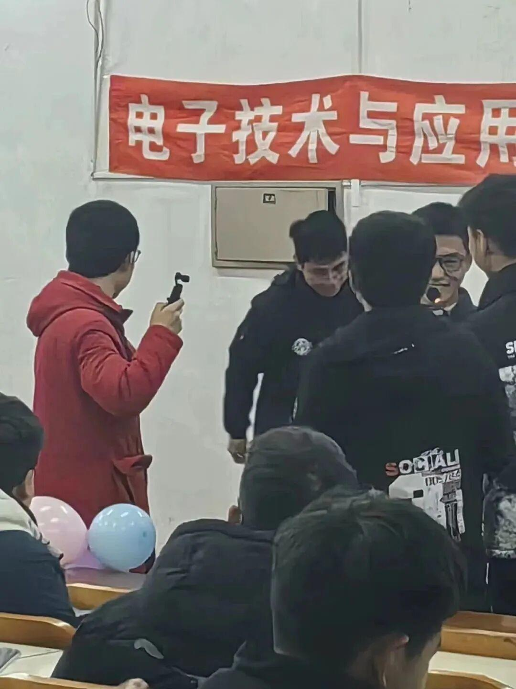
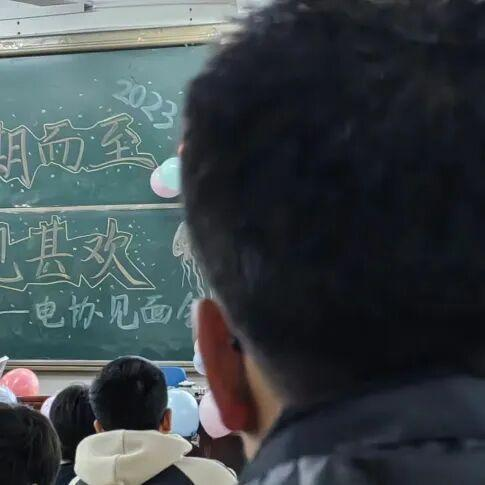
电协的现任负责人在会议中介绍了一下电协各部门的组成以及功能。
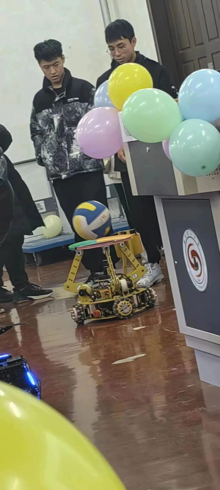
3.历届赛事介绍
在介绍完电协后学长又对电协以往所参加的赛事进行了一番宣讲，彰显了电协的实力，以及作为电协人的自信。
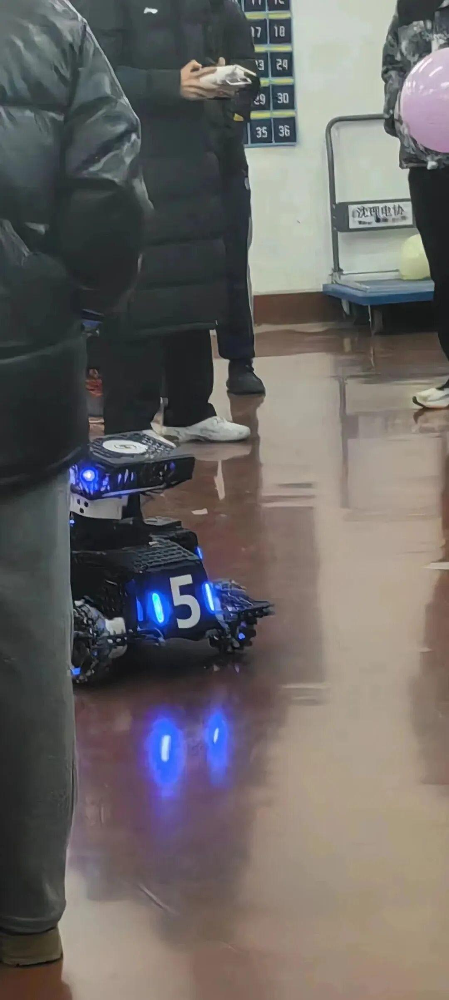

4.Ambition战队介绍
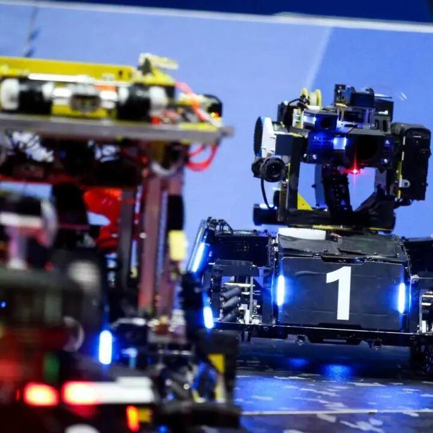
5.激动人心的抽奖环节

左右滑动查看更多

此次抽奖大动手笔，送出了许多精美的礼品，诸如鼠标垫等等，激动着队员们的心，如图一激动的打起了队长的主意（懂得都懂）。
6赛事以及电协具体介绍.
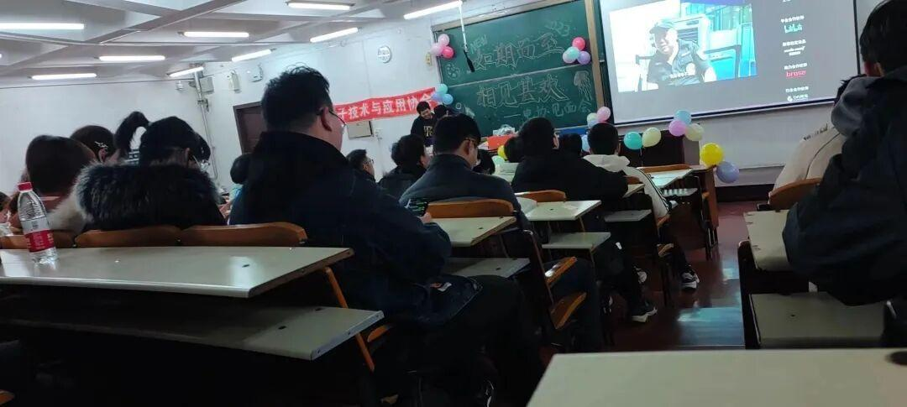
在进行了抽奖环节过后，学长就电协对队员的帮助作用，以及在学校中的作用进行了进一步的宣讲，还放出了书记当时莅临电协指导视频，坚定了萌新们的心
随后又对电协之前所参加的比赛以及取得的名次做出了讲述，在低调中展现了电协强大的实力，彰显了电协务实的风格，给予了队员们作为电协人独一无二的自信
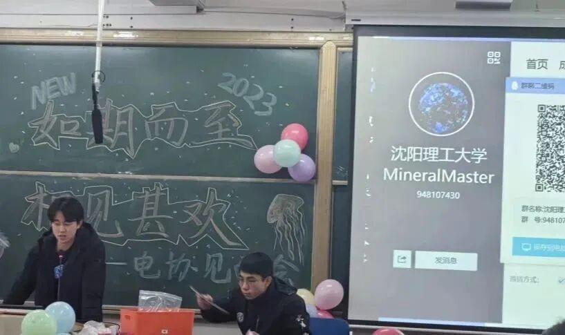
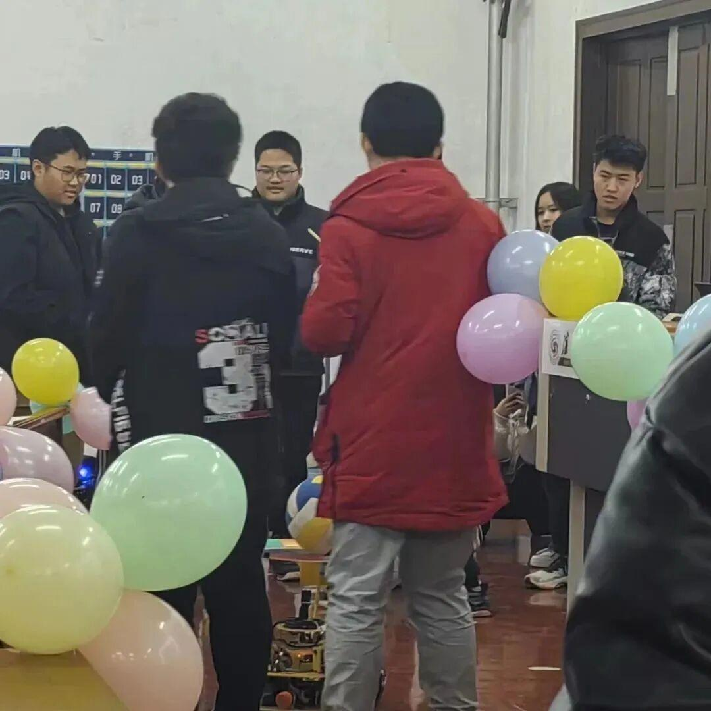
7.击鼓传花&垫球机器
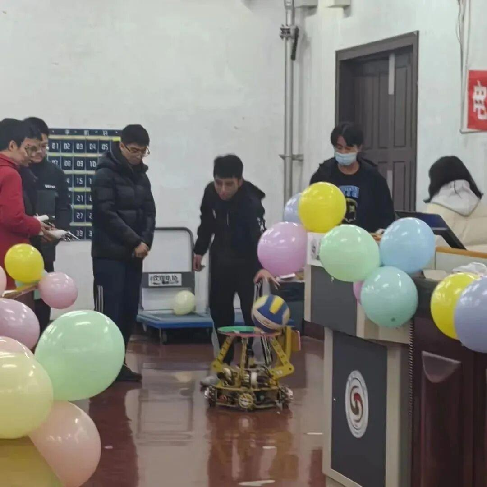
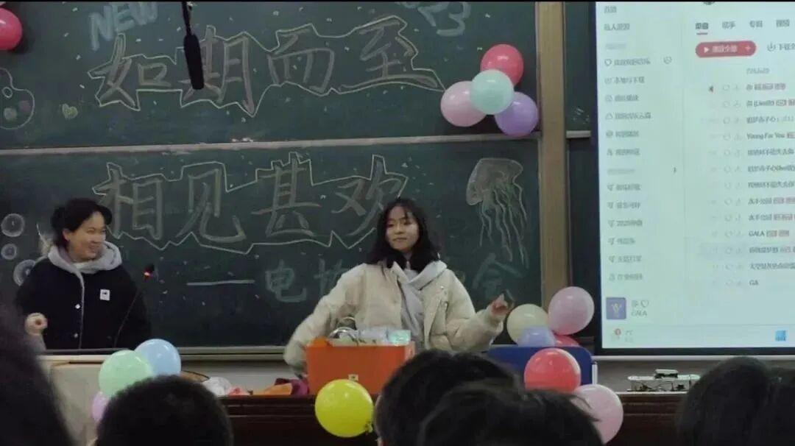
随后举行击鼓传花以及垫球机器人的比赛（张舰予学姐的舞蹈跳的好呀），队员们踊跃参与，现场气氛活泼，展现出了大一的朝气与蓬勃。
最后在队员“迈北进深，队长女装”的口号中结束了这愉快的一次活动。
总结
这次会议既是后辈的见面会，也是前辈们给予后辈的礼物，通过这次会议我们完成了新旧力量的交融，更好的让新生力量融入这个群体，相信在未来的某一天，电协将散发出更耀眼的光芒
END
文案|JC玉米
图片|电协信息部
审核|XX敏
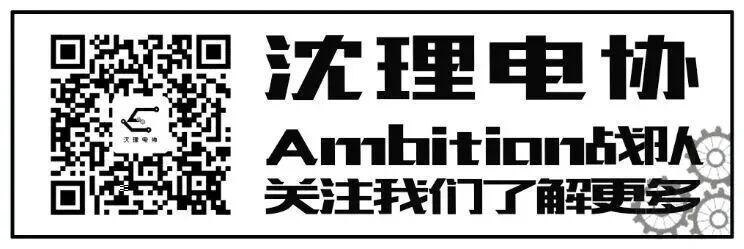